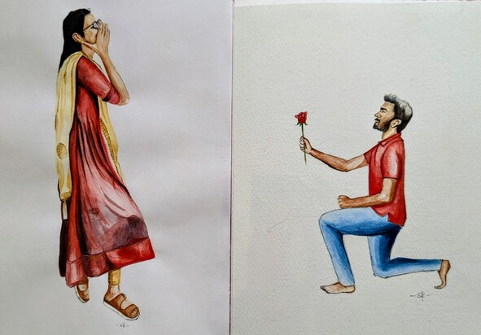

Thanks for everything...
I'm writing to rewind a memoir we both played,
The reason I got attached to you so soon, is because you made me feel something after being numb for so long...
Then out of blue moon you bloomed in my mind...
It was the time when we had 3 different convos on 3 different apps, :)
I felt overjoyed,
when you reacted for the hifi emoji I used to send, 🙌
it would be like a heart in the middle of both hands...
I chased over my phone, for every snap's notification...
"You are still my favorite notification :)"
* Those were times you did not show any excuses to message me.
* Those were times, we had a lot in common and people called it a match of wavelengths and great sync...
• The literal thing is the red bag we both used to carry to our home...
• The snap's chat "ஓஓஓஓஓ"
• The call you made a call to get the water bottle and I was already there to get one for you...
* I slowly revived my mind from a routine 10 o clock sleep to become
a normal human who also would get to be loved even after 10 o clock
* Those were times when we sit opposite to each other in the office and still send the snaps.
* I used to stare the most times at you and have made few eye contacts,
* I have locked the Florence of Jiya underneath my yellow heart
which smoothly turned red and out of no where it vanished...
* There are a lot secrets, I kept inside me, locked them
and the key was thrown into the deep shallow sea...
* Those were times I really felt, why the night ages, I hoped the nights would prolong forever...
* Those were times when we know it is already time and we didn't hold the call...
* Those were times when the call ends every 14 th min and we both
tried calling again each time continuous for 3 hours and more...
* Those were times, when every time the call ends 1.30 hrs and
we redial and it again ends 1.30 hrs and still redialled to say good night...
Look at us now, the phone at night wants to dial you bad.
So then,
"I used to have late night conversations with the Moon,
She tells me about the Sun,
I tell her about you..."
That both had left us at night ...
* Those were times, i was afraid to ask you out with me on the bike, and although we had been in the steel bird for 4 long times near the office
Memories that are still pounding my heart,
* The little coffee we had at aruvi.
* The wobbly 1 hr Jeep ride up and down seated that close
and those four selfies still rule my gallery...
* The funny/embarrassing dance performance i made in front of you
inside the traveler.
The whole return journey i was near you, watching the movies scratching our shoulders.
* The evening cricket we played together
* Shuttle games we team-up each 7PM
* The snaps you used to send when you reach your hostel
and I really waited for it every day
* I usually wait from 10 am to 10.15 am outside the EIE department casually for someone to arrive, :)
At the end of my sister's engagement function, you all had boarded my friend's auto,
i hoped you would give your final glimpse after getting inside, and that really happened :)
I hope you remember you, giving a slanted glimpse at the end.
I found that a lot can happen over a tiny dimple,
Which gave birth to the quote,
"She took away
the only left glimpses of her
Right dimple..."
"I forget what my dream was about
I remember calling your name"
I wasn't normal, after not being as normal as we were when we were in kvp office/ after office times.
"Loosing a good friend is not happy,
Especially when you don't understand why you lost them in first place..."
Now tell me, how did you move on
as if these are normal and happened only to me?
These are etched in my mind as it is sculptured on stones
.
.
.
"I didn't mean to fall in love, but you made it easy for me...❤️‍🔥
Thanks for being this long..."
என் மனதில் எழுந்த வ‌(லி)ரிகள்:
காதல் சொல்லவில்லை
காமம் பேசவில்லை
அருகில் இருக்கும்வரை
அலட்சியமாய் இருந்துவிட்டு
இடைவெளி கூட கூட
ஏன் பொக்கிஷமாய் தெரிகிறாய்.... தொலைவுகள் கூடினால்
அன்பும் கூடுமோ...
இதையெல்லாம் சகஜமாய்
கடந்துசெல்ல மனம் மறுக்கிறது,
என்ன செய்வேன்
நானோ ஒருதலை
காதல் செய்யும்
நறுமுகிழ் பேதையாயிற்றே....
2022. 11. 18
ஒரு கற்பனை ஓவியம் :)
